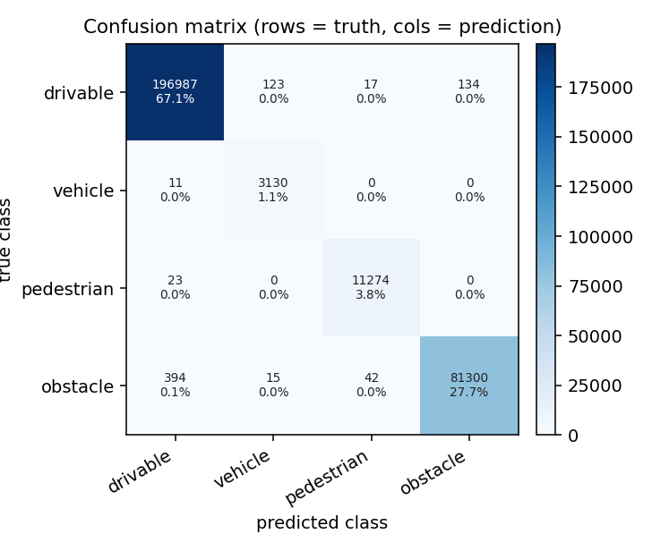
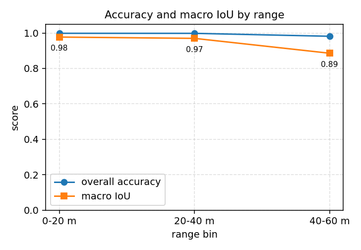
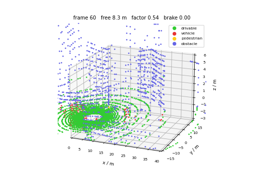
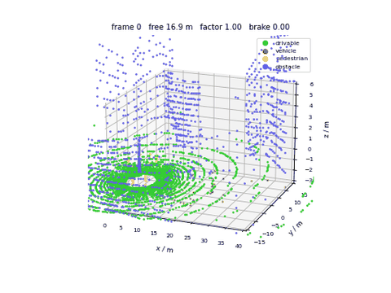

基于 CARLA 的激光雷达点云语义分割
用 CARLA 自带的语义激光雷达给普通激光雷达的点云打标签，训练一个逐点分类网络， 再把分割结果交给轨迹跟踪：可行驶面之外的激光点在车前方形成"禁行带"， 自车据此在给定参考轨迹上减速、避让。
这个模块回答的是任务（2）里的两件事：用传感器数据做感知（激光点云 → 逐点语义）， 以及给定轨迹下的控制（走廊余量 → 速度、纯跟踪 → 转角）。 仓库里 AEB、BSD、CSL 都用几何规则处理激光雷达，本模块是学习出来的。
1. 运行环境
| 项目 | 版本 | 说明 |
|---|---|---|
| 操作系统 | Ubuntu 22.04（VMware 虚拟机） | ROS 2 装在虚拟机 |
| 仿真器 | CARLA 0.9.16（Windows 11 宿主机） | 虚拟机通过 NAT 网段访问 |
| ROS | ROS 2 Humble | Ubuntu 22.04 官方源 |
| Python | 3.10.12 | 虚拟机自带 |
| 依赖 | numpy、carla 0.9.16、matplotlib（可选） | 见 requirements.txt |
CARLA 装在 Windows 上、ROS 装在虚拟机里时，虚拟机能访问的宿主机地址一般是
VMware 虚拟网卡 VMnet8 的地址，形如 192.168.148.1，下文都用这个地址举例。
2. 目录结构
carla_lidar_pointcloud_segmentation/
├── main.py 统一入口
├── main.sh / main.bat 一键入口
├── package.xml / setup.py ROS 2 包配置
├── config/params.yaml 雷达、网络、控制参数
├── launch/main.launch.py ROS 2 启动文件
├── models/ 训练好的权重（.npz，入库，免训可复现）
├── data/ 采集的数据集（.npz，不入库，可再生成）
├── carla_lidar_pointcloud_segmentation/
│ ├── labels.py 语义标签归并与类别权重
│ ├── features.py 9 维逐点特征、体素下采样、标准化
│ ├── model.py 纯 NumPy 多层感知机
│ ├── metrics.py 混淆矩阵、IoU/F1、分距离评价
│ ├── pipeline.py 逐帧提特征 → 划分 → 训练 → 评价
│ ├── control.py 走廊余量、速度系数、纯跟踪
│ ├── carla_common.py CARLA 连接、双雷达、点云配对
│ ├── probe.py 实测语义标签编号（--probe）
│ ├── figures.py 混淆矩阵与分距离曲线出图
│ ├── app.py 采集（--collect）与在线演示（--demo）
│ └── node.py ROS 2 节点
└── test/
├── test_features.py 27 项
├── test_labels.py 26 项
├── test_segmentation.py 49 项
├── test_control.py 31 项
├── test_buffers.py 22 项
└── test_demo_offline.py 15 项
3. 计算原理
3.1 标签从哪来：用语义激光雷达当老师
CARLA 提供两台激光雷达：
- 普通激光雷达
sensor.lidar.ray_cast，每个点只有坐标； - 语义激光雷达
sensor.lidar.ray_cast_semantic，每个点除了坐标还带object_idx（撞到的 actor 编号）和object_tag（语义类别）。
两台装在同一位置、同一组参数时，射线方向一一对应，于是可以这样构造训练集：
- 输入：普通点云（模拟真实雷达，没有标签）；
- 监督：语义点云的
object_tag。
这样既不用下载数据集，也不用手工标注，标签由仿真器直接给出。两台雷达的点序在多数帧里一致， 但服务端两个传感器的采样时刻可能差一帧，所以采集时按坐标做一次配对： 点数相同且坐标几乎重合就直接对齐，否则用 1 cm 网格做最近邻匹配， 距离超过 5 cm 的点丢弃并计数。
标签编号必须实测，不能照文档抄。 官方文档说 object_tag 等于 carla.CityObjectLabel
（路面 7、车辆 11、行人 4），但不同打包版本的编号并不一致。本项目使用的 CARLA 0.9.16
实测下来是另一套：路面 1、车辆 14、行人 12。如果把 4 当成行人、把 1 当成建筑，
训练集会从一开始就错，而且错得很隐蔽——网络照样收敛，只是学的东西不对。
实测方法是放几个"已知答案"再看标签：在自车前方 8 / 12 / 16 m 各放一辆 BMW，
侧前方再放三个行人，读一帧语义点云，按 object_idx（射线撞到的 actor 编号）筛出
只属于这些目标的点，看它们带的是什么标签。一次放多个是因为单个位置可能正好躲在
建筑背后，射线打不到就会误报"没有这个目标"。为此模块内置了体检模式：
python3.10 main.py --probe --host 192.168.148.1
输出里这几行就是判定依据：
自车（vehicle.tesla.model3，id 128）：45 个点，标签 [(14, 45)]（应为车辆）
参考车辆8m（vehicle.bmw.grandtourer，id 129）：92 个点，标签 [(14, 92)]（应为车辆）
参考行人6m+3.0m（walker.pedestrian.0022，id 130）：31 个点，标签 [(12, 31)]（应为行人）
自车自己就带着车辆标签，所以 14 是车辆；参考车辆同样是 14，交叉验证成立； 行人身上只有 12，所以 12 是行人；剩下的 1 高度恒为 -2.4 且点数最多，是路面。
实测得到的完整对照表（改地图或改 CARLA 版本后要重跑 --probe 核对）：
| 标签 | 实测特征 | 含义 | 归并类别 |
|---|---|---|---|
| 1 | 高度恒定在 -2.4 m，点数最多 | 路面 | 可行驶 |
| 2 | 贴地，比路面低约 0.5 m | 人行道/地形 | 可行驶 |
| 3 | 距离 24 m 以上，高度到 9.5 m | 建筑 | 障碍物 |
| 4 | 距离 21 m 以上，高度到 6.4 m | 建筑/墙 | 障碍物 |
| 6 | 细高，距离 5~14 m | 杆、树 | 障碍物 |
| 9 | 高度 10 m 的零星点 | 交通灯/标志 | 障碍物 |
| 12 | 近距离一小簇，高度 -2.3~-0.6 m | 行人 | 行人 |
| 14 | 贴着车身，比路面高 | 车辆（含自车） | 车辆 |
| 20/21/25 | 远处零星 | 远处物体 | 障碍物 |
表外的标签一律当成"未知"丢弃并计数，绝不猜。归并成四类是因为驾驶决策只关心 "能不能走、前方有没有车、有没有人、其他都别撞"，类别再细会让本就稀少的行人和车辆 样本更难学。
3.2 逐点特征
每个点算 9 维特征，全部只用单帧点云本身：
| 序号 | 名称 | 公式或含义 |
|---|---|---|
| 0 | x | 车体系纵向，米 |
| 1 | y | 车体系横向，米 |
| 2 | z | 车体系高度，米 |
| 3 | r | 水平距离 sqrt(x^2 + y^2) |
| 4 | sin_azimuth | sin(atan2(y, x)) |
| 5 | cos_azimuth | cos(atan2(y, x)) |
| 6 | elevation | atan2(z, r) |
| 7 | height_above_ground | z - z_ground，路面高度取本帧 z 的 5% 分位 |
| 8 | log_density | log(1 + n)，n 为该点所在 0.5 m 体素内的点数 |
方位角用 sin/cos 而不是角度本身，是为了避开 ±π 处的跳变——否则同一根杆子在车两侧 会被网络当成两个不同的东西。密度用体素计数代替 kNN，是为了让特征计算保持线性复杂度： 一帧三万点的 kNN 在纯 Python 里太慢，建格子只要一次遍历。
3.3 网络结构与损失
三层全连接，ReLU 激活，softmax 输出四类：
h1 = ReLU(x W1 + b1), W1 ∈ R^(9×32)
h2 = ReLU(h1 W2 + b2), W2 ∈ R^(32×32)
z = h2 W3 + b3, W3 ∈ R^(32×4)
p = softmax(z)
参数量 1508，权重存成 .npz 只有 12.7 KB。
损失用按类别加权的交叉熵。激光点云里路面点通常占九成以上，不加权的话网络只要 把所有点都判成路面就能拿到 90% 的准确率，但这样的模型没法用。权重取频率的倒数：
w_c = (N / (K * n_c))，再归一化到均值为 1
其中 N 是样本总数，K 是类别数，n_c 是第 c 类的点数。某类没有样本时权重记 0，
不参与训练。
初始化用 He 正态（标准差 sqrt(2 / fan_in)），优化器是带动量 0.9 的小批量梯度下降，
学习率 0.01，批大小 256。
3.4 评价指标
逐点分类从混淆矩阵出发，第 i 行是真值、第 j 列是预测：
IoU_i = cm[i][i] / (Σ_j cm[i][j] + Σ_j cm[j][i] - cm[i][i])
P_i = cm[i][i] / Σ_j cm[j][i]
R_i = cm[i][i] / Σ_j cm[i][j]
F1_i = 2 P_i R_i / (P_i + R_i)
某一类在真值和预测里都没出现时，该类 IoU 记为 nan，算宏平均时跳过。
不跳过的话，"这一帧没有行人"会把宏平均无故拉低，看不出模型好坏。
除了总体指标，还按距离分档统计（0~20 m、20~40 m、40~60 m）。远处点稀疏， 行人和杆子常常只有几个点，分档曲线比单一准确率更能说明模型在哪儿失效。
3.5 从分类到控制
走廊余量。 车身宽约 1.9 m，取半宽 1.2 m 的走廊（留一点余量）。 走廊里最靠前的车辆、行人、障碍物决定还能走多远：
d_free = min{ x_i | 类别_i ∈ {车辆, 行人, 障碍物}, x_i ∈ [1, 50], |y_i| ≤ 1.2 }
可行驶面（路面、车道线）不算阻挡物，否则一低头全是"障碍"。
速度系数。 距离映射到 0~1 的速度系数，线性过渡：
f(d) = 0, d ≤ d_stop
f(d) = (d - d_stop)/(d_comf - d_stop), d_stop < d < d_comf
f(d) = 1, d ≥ d_comf
默认 d_stop = 4 m、d_comf = 12 m。用线性而不用阶跃，是为了不让油门和刹车来回抖。
纯跟踪转角。 给定参考轨迹，取车前方约 6 m 的预瞄点，按几何关系算前轮转角：
α = atan2(y_preview, x_preview) （预瞄点在车体系下的方位）
κ = 2 sin(α) / L_d （曲率，L_d 为预瞄距离）
δ = atan(W_b * κ) （W_b 为轴距）
最后再除以最大转角换成 CARLA 的归一化转向指令 [-1, 1]。
4. 仿真搭建与运行步骤
4.1 启动 CARLA 服务端（Windows）
进入 CARLA 安装目录，双击 CarlaUE4.exe，或命令行：
CarlaUE4.exe -carla-rpc-port=2000 -quality-level=Low
-quality-level=Low 能明显降低显存占用，采集点云足够了。启动后窗口里应能看到城市。
4.2 查询宿主机 IP（Windows）
ipconfig
找到标题为 VMware Network Adapter VMnet8 的那一段，记下 IPv4 地址，
例如 192.168.148.1。虚拟机的网络适配器要选 NAT 模式。后文命令里的这个地址
都要换成你自己查到的值，不能照抄。
4.3 虚拟机连通性检查
ping 192.168.148.1
python3 -c "import carla; c = carla.Client('192.168.148.1', 2000); c.set_timeout(5); print(c.get_world().get_map().name)"
第二条能打印出地图名（如 Carla/Maps/Town03）就说明通了。
如果卡住不动，先看 Windows 防火墙有没有放行 2000 端口。
4.4 编译功能包
cd ~/ros2_ws
colcon build --packages-select carla_lidar_pointcloud_segmentation
source install/setup.bash
4.5 离线单元测试（不需要 CARLA）
cd src/ground/carla_lidar_pointcloud_segmentation
python3 test/test_features.py
python3 test/test_labels.py
python3 test/test_segmentation.py
python3 test/test_control.py
python3 test/test_buffers.py
python3 test/test_demo_offline.py
六个文件末行分别输出 [结果] 27 / 26 / 53 / 35 / 22 / 15 项全部通过，共 178 项。
其中 test_buffers.py 校验雷达缓冲区的解析：把手工构造的字节串喂进解析函数，
确认 4 个 float32 的普通点和 6 个 32 位整数的语义点都能按预期取出，
并且配对后语义点不会串到别的点上去。test_demo_offline.py 用一个假的 carla
模块把 --demo 的整条控制循环跑一遍，控制量范围、统计指标、清理流程都能
在没有 CARLA 的机器上验证。
4.6 采集数据集
python3 main.py --collect --host 192.168.148.1 --frames 300 --traffic 12
默认沿用服务端当前地图，不切图；要换地图再显式加 --town Town03（切图很慢，失败
会直接退出，见 4.9 节）。自车开自动驾驶，同时录两台雷达的数据。终端每 10% 打一行进度，
结束时打印帧数、点数、配对失败数、类别分布和文件大小，并写一份
data/dataset_meta.json 便于回溯。
采集时长参考（虚拟机实测）：300 帧、20 Hz 目标频率，实际跑到 6.1 fps， 整个过程约 49 秒；共 148.6 万点，配对失败 0 个点，数据文件 13.8 MB （解压后 28.4 MB）。
4.7 训练与评价
python3 main.py --train --data data/dataset.npz --epochs 30
默认写回入库的 models/seg_mlp.npz。目标已存在时训练会直接退出，避免一次试跑就把
仓库里的权重覆盖掉；确认要覆盖加 --force，或者用 --checkpoint out/seg_mlp.npz
换个位置。
终端打印逐类 IoU/精确率/召回率、宏平均、分距离准确率，权重写到
models/seg_mlp.npz，标准化统计量写到同目录的 .stats.npz。
4.8 在线演示
python3 main.py --demo --checkpoint models/seg_mlp.npz --host 192.168.148.1 --frames 150
每帧打印点数、可行驶比例、前方余量、速度系数、车速和三个控制量，结束时汇总
前方余量、车速、横向偏差和与其它车辆的真实最小中心距。加 --record 目录
会把每帧画成 PNG（内部走无界面后端），之后可以合成动图。
没有显示器、也不想录帧时加 --no-plot，只输出文字。
4.9 用 ROS 2 launch 启动
ros2 launch carla_lidar_pointcloud_segmentation main.launch.py host:=192.168.148.1
或者直接跑节点：
ros2 run carla_lidar_pointcloud_segmentation lidar_segmentation_node --ros-args \
--params-file config/params.yaml
节点发布 /lidar/segmented（带类别强度的点云）、/lidar/free_distance、
/lidar/drivable_ratio、/vehicle/control，并直接给自车下发油门、刹车和转角。
config/params.yaml 里的参数都会真正生效：连接、雷达、控制三组一共 19 个，节点启动时
逐个声明并读出实际值，不再被代码里的默认值覆盖。用 launch 时可以在命令行覆盖其中任意
一项，例如 host:=192.168.148.1 traffic:=6 comfort_distance:=18。
默认不切图，直接用服务端当前地图。要切图必须显式给 --town，并且失败时直接报错
退出：load_world 一旦卡住，CARLA 会把后续客户端一起拖死，只能重启，留在半死状态里
继续跑没有意义。get_available_maps() 只说明地图包在磁盘上，不代表这台机器能加载完
（实测列表里有 Town03 仍然加载失败），所以它只用来提前拦掉「资源根本不存在」的情况。
已经在服务端手动切好图、想跳过重载时：
python3 main.py --demo --keep-map
CARLA_KEEP_MAP=1 ros2 launch carla_lidar_pointcloud_segmentation main.launch.py
5. 参数说明
| 参数 | 默认值 | 说明 |
|---|---|---|
--host |
127.0.0.1 | CARLA 服务端地址 |
--port |
2000 | RPC 端口 |
--town |
空 | 不填沿用服务端当前地图；填了才切图，可能很慢，失败会退出 |
--keep-map |
关 | 即使给了 --town 也不切图，直接用服务端当前地图 |
--force |
关 | 训练时允许覆盖已存在的权重文件 |
--vehicle |
vehicle.tesla.model3 | 自车 |
--spawn-index |
0 | 出生点索引，被占用时换一个 |
--traffic |
12 | NPC 车数量，0 表示不放 |
--frames |
300 | 采集或演示的帧数 |
--lidar-range |
60.0 | 量程（米） |
--channels |
32 | 线数 |
--points-per-second |
200000 | 点频 |
--rotation |
20.0 | 转速（Hz） |
--lidar-height |
2.4 | 雷达安装高度（米） |
--epochs |
30 | 训练轮数 |
--lr |
0.01 | 学习率 |
--hidden |
32,32 | 隐层宽度 |
--corridor-width |
1.2 | 车身走廊半宽（米） |
--pedestrians |
8 | 行人数量，0 表示不放 |
--max-speed |
8.0 | 演示时的目标车速（米/秒） |
--comfort-distance |
12.0 | 开始减速的距离（米） |
--stop-distance |
4.0 | 速度系数降到 0 的距离（米） |
--lookahead |
6.0 | 纯跟踪的预瞄距离（米） |
--start-throttle |
0.45 | 静止起步时的油门下限，车重起不来时调大 |
--free-window |
5 | 前方余量的中值滤波帧数，1 表示不过滤 |
--record |
空 | 逐帧存 PNG 的目录，用于合成动图 |
--no-plot |
关 | 演示时不弹三维散点图 |
两台雷达的参数必须一致，否则点对不上。这一点在 --collect 里由同一份参数同时构造，
不需要手工保证。
6. 结果与性能
6.1 离线自检
不接 CARLA 也能验证整条链路。--self-check 用合成点云跑一遍：
样本：训练 9840 / 验证 2460，参数量 1508
drivable IoU 0.998 vehicle IoU 1.000
pedestrian IoU 0.983 obstacle IoU 1.000
宏平均 IoU 0.995，宏平均 F1 0.998，总体准确率 0.999
这组数字只说明"特征 → 训练 → 评价"这条链路是通的，合成数据的几何太规整， 不能代表真实精度。真实精度见下一节。
6.2 采集数据的体检
一次完整的采集（Town03、300 帧、12 辆 NPC 车、8 个行人、点频 20 万）得到：
| 项目 | 数值 |
|---|---|
| 帧数 | 300 |
| 点数 | 1486598 |
| 配对失败丢弃 | 0 |
| 文件大小 | 13.8 MB（未压缩 28.4 MB） |
| 采集速度 | 6.1 帧/秒，300 帧约 49 秒 |
类别分布：
| 类别 | 占比 | 说明 |
|---|---|---|
| drivable | 0.6725 | 路面与人行道，占大头 |
| vehicle | 0.0107 | 车辆（含自车），1% 左右 |
| pedestrian | 0.0383 | 行人，3.8% |
| obstacle | 0.2785 | 建筑、杆、树等 |
车辆只有 1%，这是要加类别权重的原因：不加权时网络只要全猜路面就有 67% 准确率。
权重按 1 / (K * p) 算（K 是类别数、p 是该类占比），车辆约 23 倍于各类均值，
最后再整体归一化到均值 1。
配对失败 0 个点，说明两台雷达在同一帧内点序完全一致，逐点配对直接命中， 最近邻兜底一次都没用上。
第一次采集时车辆只占 0.17%，因为 NPC 车是按整张地图随机撒的，十二辆分散在 几百米外，60 m 量程根本扫不到。改成优先挑自车周围 10~45 m 的出生点后， 车辆占比升到 1.07%。
6.3 分割精度
30 轮训练，训练集 1173802 点、验证集 293450 点：
| 类别 | IoU | 精确率 | 召回率 | F1 |
|---|---|---|---|---|
| drivable | 0.996 | 0.998 | 0.999 | 0.998 |
| vehicle | 0.955 | 0.958 | 0.996 | 0.977 |
| pedestrian | 0.993 | 0.995 | 0.998 | 0.996 |
| obstacle | 0.993 | 0.998 | 0.994 | 0.996 |
| 宏平均 | 0.984 | — | — | 0.992 |
总体准确率 0.997。划分与初始化都用固定种子（seed=0），同一份数据集重跑，
得到的混淆矩阵和指标逐位相同——这一点在写文档时验证过，不是估计值。

行是真实类别、列是预测类别，格子里是点数与占比。四类的对角线都很干净， 主要混淆发生在"障碍物"与"可行驶"之间：有 394 个真实障碍物点被判成可行驶， 123 个真实可行驶点被判成车辆。前者是路沿、低矮台阶这类贴着地面的东西， 后者多半是自车车身与远处车辆边缘。
按距离分档：
| 距离档 | 点数 | 准确率 | 宏平均 IoU |
|---|---|---|---|
| 0-20 m | 191547 | 0.998 | 0.977 |
| 20-40 m | 87883 | 0.998 | 0.970 |
| 40-60 m | 14019 | 0.982 | 0.886 |

40-60 m 档宏平均 IoU 掉到 0.886，原因很直接：远处一个行人只落到三五个点，
特征里的 log_density 和 height_above_ground 都变得不可靠，逐点分类必然吃亏。
这也是这套方法的下游限制——远处目标更适合先用聚类找候选，再交给分类器。
模型体积：1508 个参数，权重文件 12.7 KB，--demo 里单帧推理不到 1 毫秒，
瓶颈完全在 CARLA 的渲染与点云传输上。
6.4 下游控制效果
演示是闭环的：点云分割结果 → 走廊内最近阻挡物距离 → 速度系数 → 油门， 参考轨迹取当前车道中心线往前 30 m → 纯跟踪 → 转角。跑 120 帧（约 6 秒仿真时间）：
| 指标 | 数值 |
|---|---|
| 前方余量 | 最小 8.2 m，平均 12.2 m |
| 车速 | 平均 4.0 m/s，最高 5.2 m/s |
| 速度系数 | 从 1.00 降到 0.52（跟车时） |
| 横向偏差 | 平均 0.25 m，最大 0.91 m（起步瞬间），之后稳定在 0.1 m 内 |
| 与其它车辆的真实最小中心距 | 9.0 m（由 actor 位置直接量得，不靠点云估计） |
| 刹车量大于 0.1 的帧 | 0 / 120 |

上图是某一帧的三维分割结果，绿=可行驶、红=车辆、黄=行人、蓝=障碍物。

动图是整个闭环过程，标题里带每帧的前方余量与速度系数。
几处要如实说明的地方：
- 没有踩刹车。 当前是纯油门调节：前方余量变小 → 目标车速降低 → 油门从 1.00 降到 0.01，靠减小驱动力和行驶阻力减速。减速确实由感知结果驱动 （余量 16.9 m → 8.2 m 时，速度系数从 1.00 降到 0.52、车速从 5.2 m/s 降到 3.3 m/s），但不是主动制动。
- 跟车距离稳定在 8~13 m，没有贴脸，也没有拉开到看不见：速度系数在 0.52~0.75 之间来回微调，说明控制器在跟踪前车而不是撞上去或停住。
- 横向偏差最大 0.91 m 出现在起步瞬间，因为自车出生点本身偏离车道中心 0.76 m；纯跟踪用两秒左右把它拉回中心线，之后稳定在 0.1 m 内。
- 最小真实间距 9.0 m 是用
world.get_actors()里的 actor 位置算的， 不是用点云估的——后者有噪声，恰好是这套方法要改进的地方。
调这三个参数能改变行为：--comfort-distance（默认 12 m，越大越早减速）、
--lookahead（默认 6 m，越大越平顺但过弯会切内道）、--free-window（默认 5 帧，
越大越平滑但越迟钝，1 表示关闭中值滤波）。
6.5 已知限制
- 单帧处理，没有时序融合，被遮挡后重新出现的物体要等下一帧才能恢复；
object_tag的编号依赖 CARLA 版本，换版本要重新核对labels.MEASURED_TAG_TABLE；- 行人、杆子在 40 m 外只有几个点，逐点分类必然吃亏，这由分距离曲线如实呈现；
- 语义雷达要多渲染一遍，采集 300 帧实测 49 秒，比单雷达慢；
- 网络只有 1508 个参数，属于"轻量基线"，不是精度上限；
- 默认不切图：
get_available_maps()只说明地图包在磁盘上，不代表本机能加载完（实测 列表里有 Town03 仍然加载失败），所以切图必须显式--town，失败直接报错退出； 想换图又卡住时，先在服务端手动切好，再用--keep-map跳过重载； - 前方余量做了 5 帧中值滤波，单帧误分不再引起急刹，代价是两帧左右的延迟。
7. 源码解析
7.1 labels.py：把 14 类压成 4 类
CARLA 的 CityObjectLabel 有十几个取值，逐点分类直接用会出问题：路牌、红绿灯在一个
帧里可能只有几十个点，类别太多等于每类都没有样本。所以压成四类，并且保留
TAG_TO_CLASS 这张表——换 CARLA 版本时只改这一处。
未知标签返回 -1 而不是猜一个，让调用方显式丢弃并计数。
7.2 features.py：只用单帧信息
point_features 是纯函数：输入 (N, 3)，输出 (N, 9)。路面高度用 5% 分位估计，
比取最小值稳；体素密度用字典计数，一次遍历；标准化统计量单独算、单独存，
训练和推理必须用同一组。
7.3 model.py：一百多行的反向传播
三层网络的梯度是手写的。softmax 减最大值再取指数，避免 exp 溢出；
交叉熵的梯度 p - onehot 再乘类别权重；反向传播时 ReLU 的导数用 act > 0 直接取。
权重用 np.savez_compressed 存，附带 shape 数组，load 时按形状重建结构。
7.4 metrics.py 与 pipeline.py：评价与流水线
evaluate 一次给出混淆矩阵、逐类 IoU/精确率/召回率/F1、宏平均和总体准确率。
pipeline.frame_features 按帧提特征——路面高度必须逐帧估，拿全局的会让坡道上的
点全错。train_eval 负责划分、训练、分距离评价，返回一个可直接打印的字典。
7.5 control.py：从点到决策
四个函数：走廊掩码、前方余量、速度系数、纯跟踪。都是纯 NumPy，所以
test_control.py 能用构造出来的点云把每种边界情况测一遍——比如"路面不能算障碍物"
这种一写错就撞车的逻辑。
7.6 carla_common.py、app.py、node.py：与 CARLA 打交道
carla_common 负责连接、生成、挂传感器、点云配对。app.run_collect 是采集主循环，
app.run_demo 是在线推理。node.py 把同样的流程包进 ROS 2 定时器，并把结果发布到话题。
三处共同遵守的约定：同步模式开、退出必调 restore_async、传感器和车辆在 finally
里销毁。少任何一条，CARLA 服务端都可能卡在最后一帧，下次连接像死机。
8. 常见问题
Q：采集时报 "第 N 帧等不到传感器数据"。
多半是同步模式没开，或 sensor_tick 不是 0。确认 connect(..., sync=True)，
并且两台雷达都用 sensor_tick=0。
Q：训练时某一类 IoU 一直是 0。
先看 dataset_meta.json 的类别分布。如果该类点数为 0，说明采集场景里没有这类目标，
换 Town03 的市中心或增加 --traffic 再采。
Q：object_tag 全是 0。
语义雷达的 blueprint 没设对，或者服务端版本不支持 ray_cast_semantic。
用 python3.10 -c "import carla; c=carla.Client('192.168.148.1',2000); print(c.get_server_version())"
确认服务端版本是 0.9.16。
Q：刚生成的车/人位置完全不对，跑到世界原点附近去了。
CARLA 里刚 try_spawn_actor 的 actor，在下一次 world.tick() 之前读到的
get_transform() 是全零（位置 0、朝向 0）。如果拿它算"自车前方 8 m"，
结果会落在世界原点附近，雷达自然打不到，看起来就像被遮挡。
办法是 spawn 之后先 world.tick() 一两帧，再读位姿。--probe 模式已经这么做了。
Q：语义雷达的点对象没有 x 属性。
不同打包版本的点对象字段名不一样（有的是 detection.x，有的只有
detection.point.x）。本项目不按属性读，直接解析 raw_data 缓冲区：
普通雷达每点 4 个 float32，语义雷达每点 6 个 32 位，后两个是 object_idx
和 object_tag。缓冲区布局跨版本稳定。
Q：脚本退出后 CARLA 窗口卡住不动。
同步模式没恢复。检查是否走了 finally 里的 restore_async；实在卡住了重启服务端。
9. 参考
- CARLA 官方文档，Sensors reference: Lidar and Semantic Lidar。
- CARLA 官方示例
PythonAPI/examples/lidar_to_camera.py（点云与相机投影的对照）。 - Qi 等，PointNet: Deep Learning on Point Sets for 3D Classification and Segmentation， CVPR 2017 —— 逐点特征 + 置换不变性的思路来源。
- 仓库内
carla_aeb_braking、carla_bsd_blind_spot：几何规则处理激光雷达的对照实现。
AI 声明
本项目源码与本文档使用大模型辅助编写（DeepSeek 协助整理与排错）， 提交者已对提交内容负全部责任，并已在真实 CARLA 0.9.16 环境中完成端到端运行验证。